Fallout 76
『Fallout 76』は、Bethesda Game Studios（主にオースティンスタジオ）が開発し、Bethesda Softworksが発売した、ポストアポカリプスを舞台とするマルチプレイヤー・オンライン・ロールプレイングゲームです。Falloutシリーズの第6作目（全体では第9作目）にあたり、2018年11月14日にWindows、PlayStation 4、Xbox One向けにリリースされました。
『Fallout 76』は無料のシーズンアップデートを定期的に受けており、現在第26弾のメジャーアップデート『The Backwoods』が配信中です。2024年には累計プレイヤー数が2000万人を達成しました。月額サブスクリプションは不要で、オプションのAtomic Shop購入と『Fallout 1st』によって運営されています。
『Fallout 76』はFalloutシリーズの前日譚であり、様々な作品のロアをより深く掘り下げています。ただし、ストーリーを理解するために事前の知識は必要なく、また将来の作品のネタバレもないため、Falloutシリーズ未経験者が最初にプレイするタイトルとしても適しています。
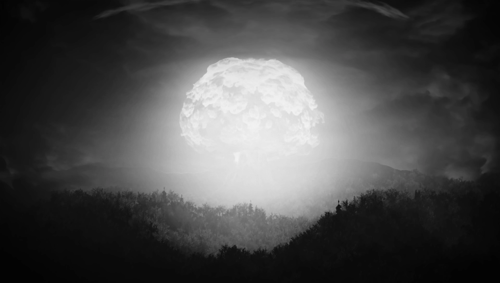
舞台設定
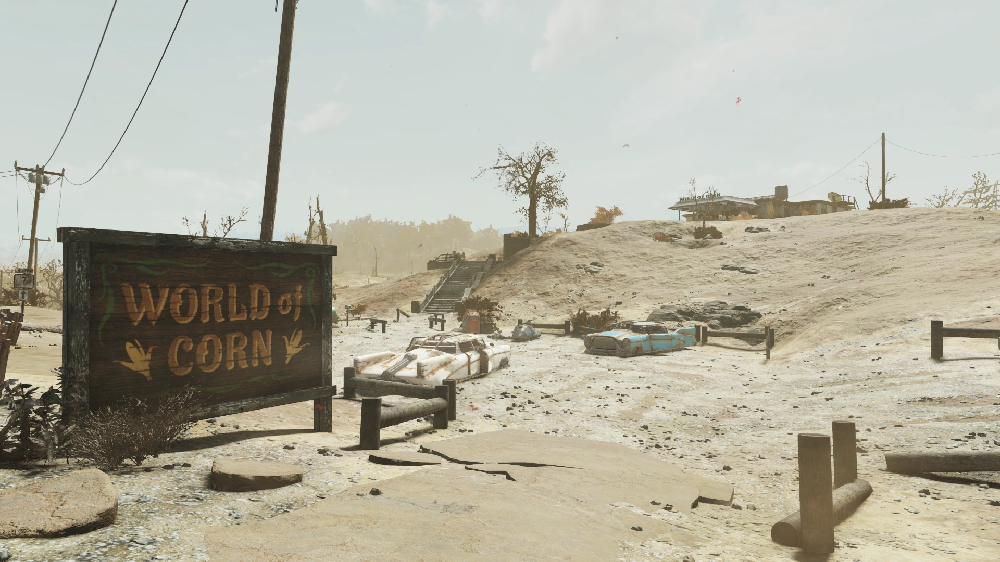
物語の舞台は主にアパラチアで、旧ウェストバージニア州を中心に構成されていますが、ペンシルベニア、バージニア、ニュージャージー、オハイオも含まれます。プレイヤーはVault 76のVault居住者として旅に出ます。
旅の途中で、アパラチアが核戦争の灰燼からいかに荒廃し苦しんできたか、そしてその住民がスコーチ病（Scorched Plague）と呼ばれるゾンビのようなウイルスに対してどのように戦っているかを発見します。異なる派閥がアパラチアの復興や征服に関して対立する考えを持っています。
『Fallout 76』は2102年10月23日（レクラメーション・デー）、大戦から25年後に始まりました。アップデートの追加ごとに時間が1年進み、『Wastelanders』で2103年、『Steel Reign』で2104年、『Expeditions: Atlantic City』で2105年となっています。これはシリーズ内で最も古い時間軸です。

ゲームプレイ
過去のFalloutからの変更点
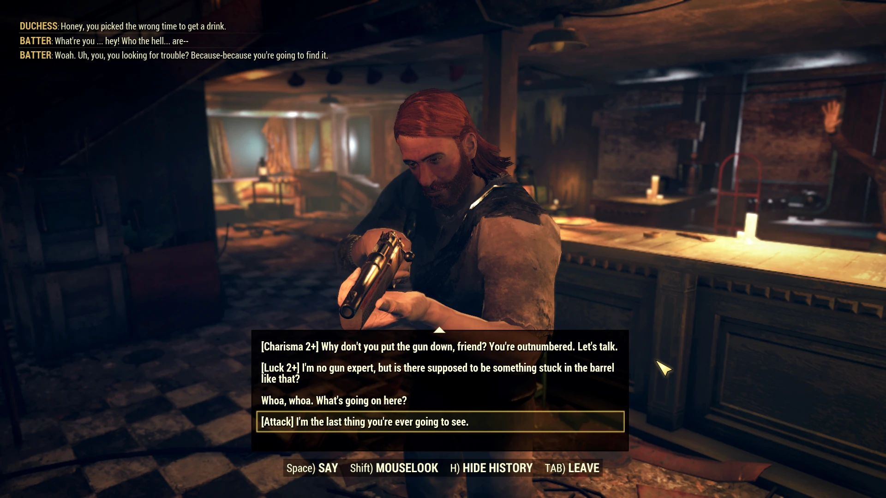
『Fallout 76』は同じエンジンを共有しているため『Fallout 4』に似たプレイ感覚ですが、多くの改善と利便性の向上が施されています。『Fallout 4』で物議を醸した会話システムから脱し、プレイヤーは完全な応答内容を確認でき、会話にはSPECIAL、アイテム、クエスト進捗のチェックが頻繁に含まれます。
屋内からのファストトラベルが可能になり、敵が近くにいても15秒以内に攻撃されなければ使用できます。外見と性別はいつでも変更可能です。フォトモードも利用可能です。
Vault 76を出る際、レベル1から始めるか、プリセットビルドを選択して即座にレベル20から始めるかを選択できます。これは序盤の難易度を緩和し、新規プレイヤーがNPCのいるクエストをより早く楽しめるようにするための機能です。
グールになる
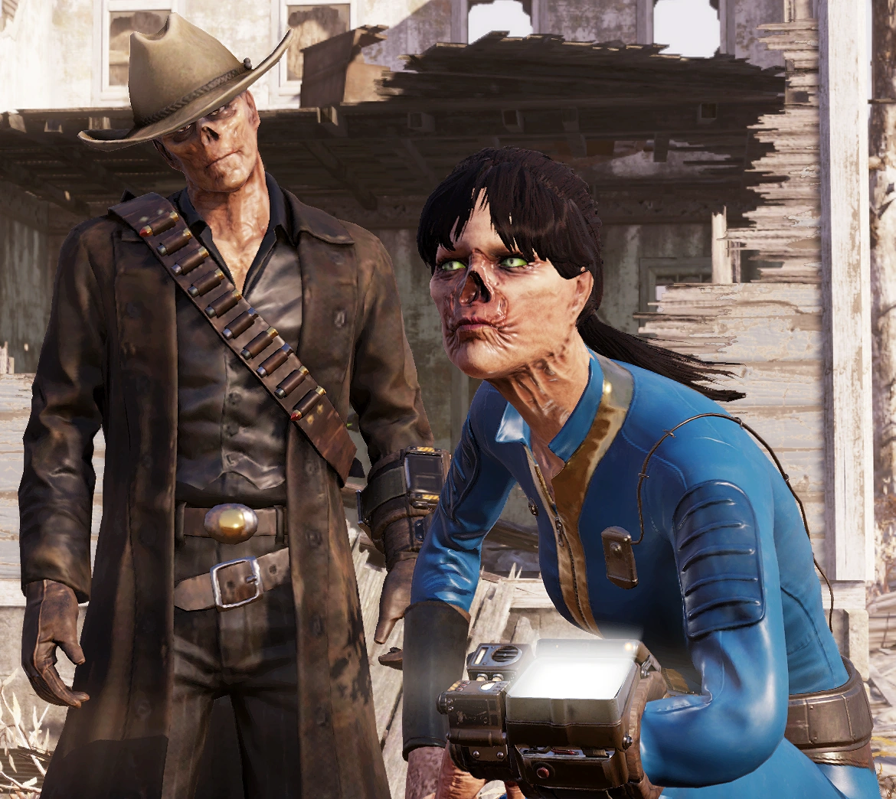
レベル50に達すると、プレイヤーはクエスト「Leap of Faith」と「A Fresh Pair of Genes」を完了することでグールになることができます。変身するとグール専用のパークと能力が付与されます。グールは病気に免疫があり、空腹喉の渇きがなく、核爆発ゾーンや放射能エリアに安全に入ることができます。
グールは放射線を治癒の一形態として利用できます。蓄積された放射線は「グロウ（Glow）」と呼ばれる追加のヘルスバーのシールドとして機能します。ただし、グールになることにはデメリットもあり、カリスマが-10され、特定のクエストラインでは変装が必要となり、フェラル（野生化）メーターの管理が必要です。
ワールドとサーバー
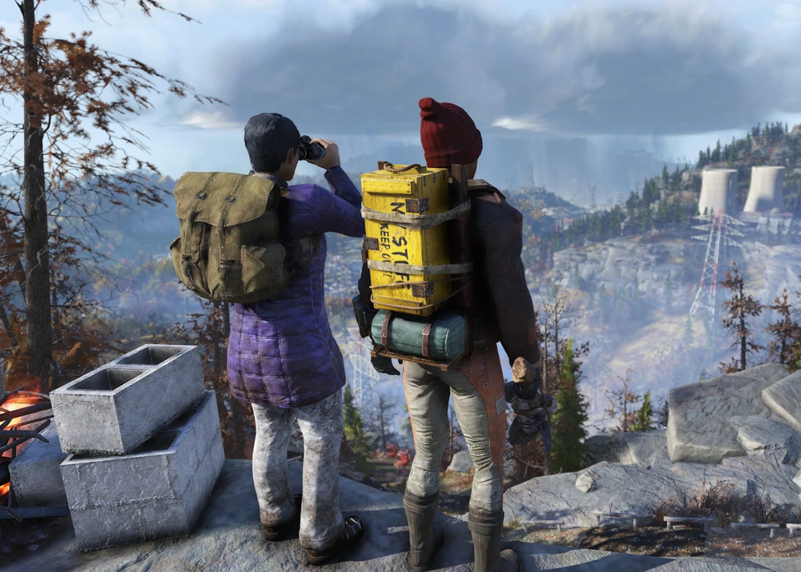
『Fallout 76』は新しいレンダリング環境技術を使用しており、『Fallout 4』の16倍のディテールを実現しています。ワールドマップは『Fallout 4』の約4倍の広さで、Skyline ValleyやBurning Springsの追加により約5〜6倍になっています。
アパラチアは大戦中に軽度の核攻撃しか受けなかったため、自然と森林が多く残されています。各サーバーには最大24人のプレイヤーが収容され、グリーフィングを防ぐためにプレイヤーはログイン時にランダムサーバーに割り当てられます。
ソロプレイ
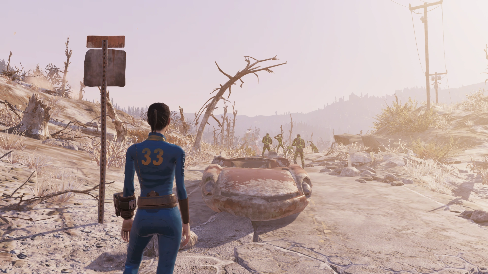
『Fallout 76』はマルチプレイを前提に設計されていますが、ソロプレイも考慮されています。すべてのストーリークエストは一人で解決可能であり、「Lone Wanderer」というパークにより受けるダメージを軽減できます。
マルチプレイヤー
しかし、イベントは一人ではかなり難しく、チームでの参加が推奨されます。20分ごとに新しいランダムなパブリックイベントがワールドマップに出現します。イベントでは通常、プレイヤーが敵のウェーブを撃退しますが、アイテム回収などのタスクが求められることもあります。
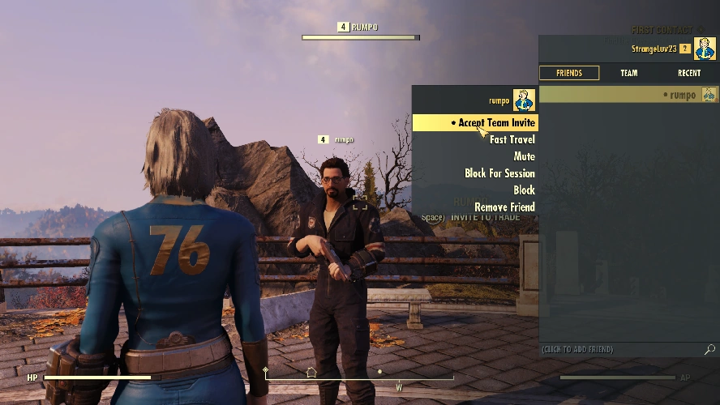
プレイヤーは最大4人のスクワッドを組んで「パブリックチーム」に参加できます。例えば、カジュアルチームはチームに長くいるほどINTが上がります。
戦闘と装備
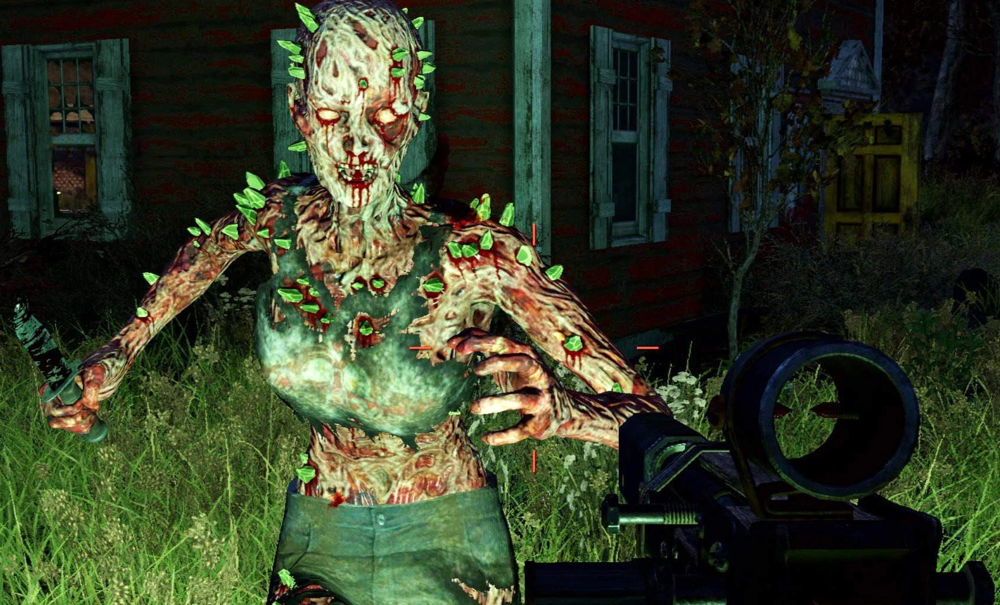
戦闘は『Fallout 4』に似ていますが、マルチプレイヤーの性質上、V.A.T.S.はリアルタイムで動作します。空中でも使用可能です。シリーズ初となる弓が追加され、アーチャービルドが可能になりました。
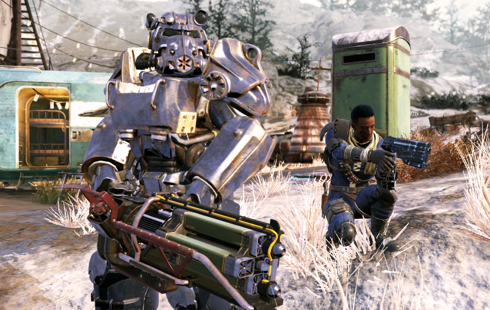
武器とアーマーには耐久度があり、ゲーム内マテリアルを使って定期的に修理する必要があります。レジェンダリー装備には「レジェンダリー効果」と呼ばれる特殊な修飾子があり、モジュールを使用してレジェンダリークラフティングで異なる効果を「ロール」できます。
パワーアーマーは『Fallout 4』と同様に機能し、フュージョンコアが必要です。落下ダメージ、放射線ダメージ、肢体ダメージ、弾道攻撃から防護します。12種類のパワーアーマーがあります。
イベントと核兵器
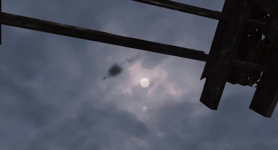
メインクエスト「I Am Become Death」を完了すると核兵器が使用可能になります。核兵器を発射するには、3つのミサイルサイロ（Site Alpha、Bravo、Charlie）のいずれかを訪れ、核キーカードと発射コードが必要です。
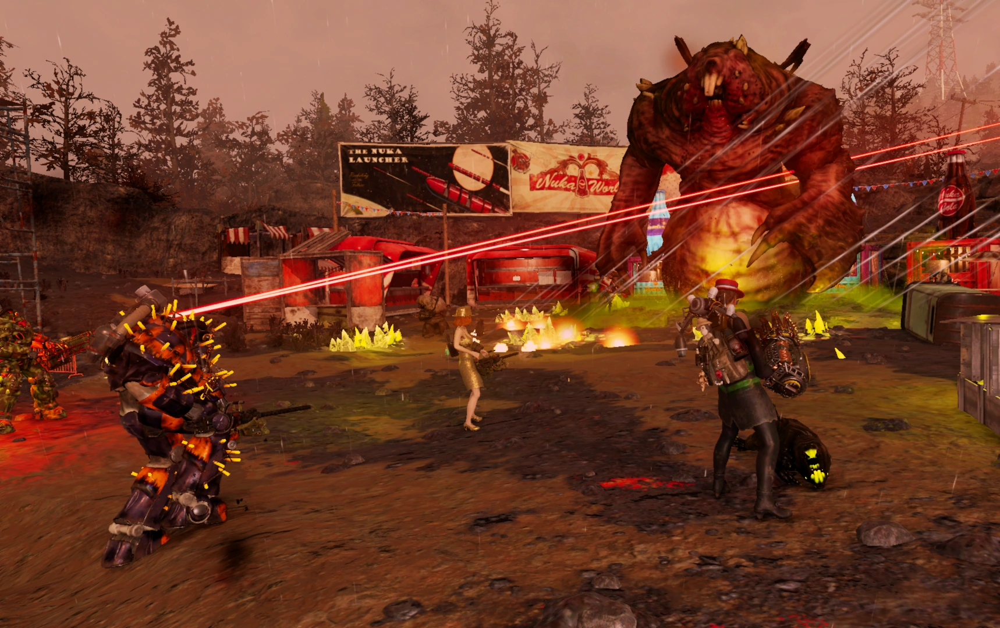
核兵器の主な目的は4つのエンドゲームボスを起動することです：
- スコーチビーストクイーン（Fissure site Prime周辺を核攻撃で「Scorched Earth」を起動）
- アール・ウィリアムズ（Monongah Mineを核攻撃で「A Colossal Problem」を起動）
- ウルトラサイトタイタン（Abandoned mine shaft 2を核攻撃で「Seismic Activity」を起動）
- ストームゴライアス（Skyline Valley内を核攻撃で「Neurological Warfare」を起動）
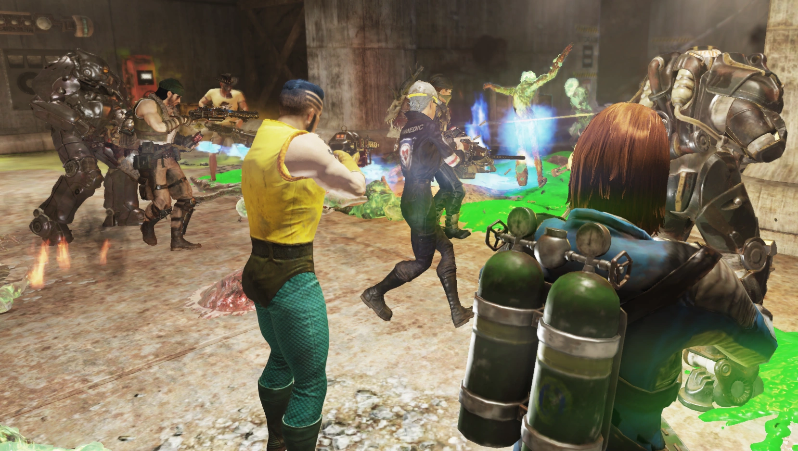
サーバーでは様々なイベントが常時行われています。パブリックイベントは現実時間で0分、20分、40分ごとに発生します。プレイヤーに人気の「Radiation Rumble」は、敵のウェーブと戦うことで高速なキャラクター成長が可能なイベントです。
クエストとNPC
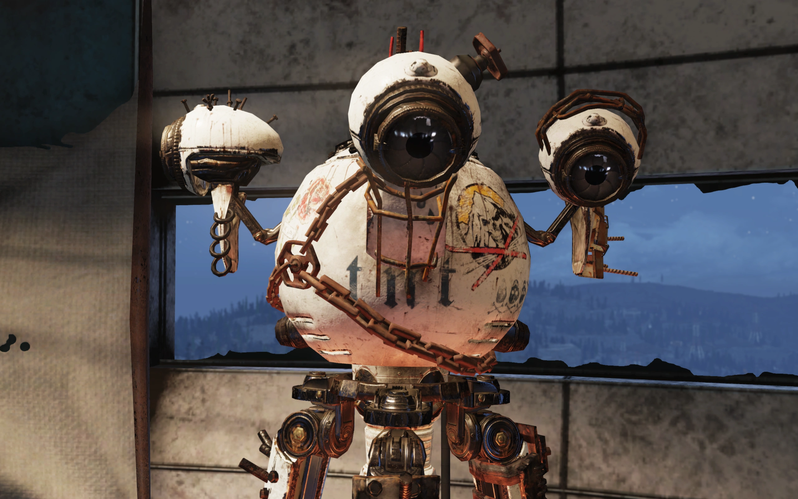
ローンチ時のクエストは、ロケーションの発見、ホロテープの録音の聴取、ターミナルやメモの閲覧を通じて受注する「発見型クエスト」が中心でした。ロボットがNPCの従来の役割を担い、ストーリーを進行させていました。
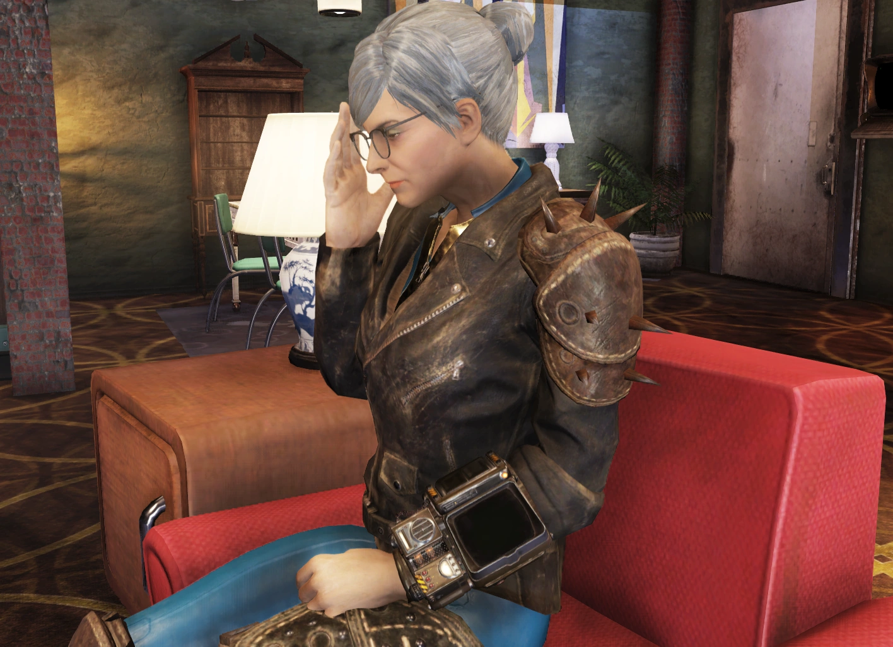
『Wastelanders』アップデートでは生きた人間のNPCが追加され、クエストを提供するようになりました。プレイヤーがサットンにいる監督官に初めて会わないまま進めると、Wastelandersの大部分のストーリーラインを見逃すことになります。
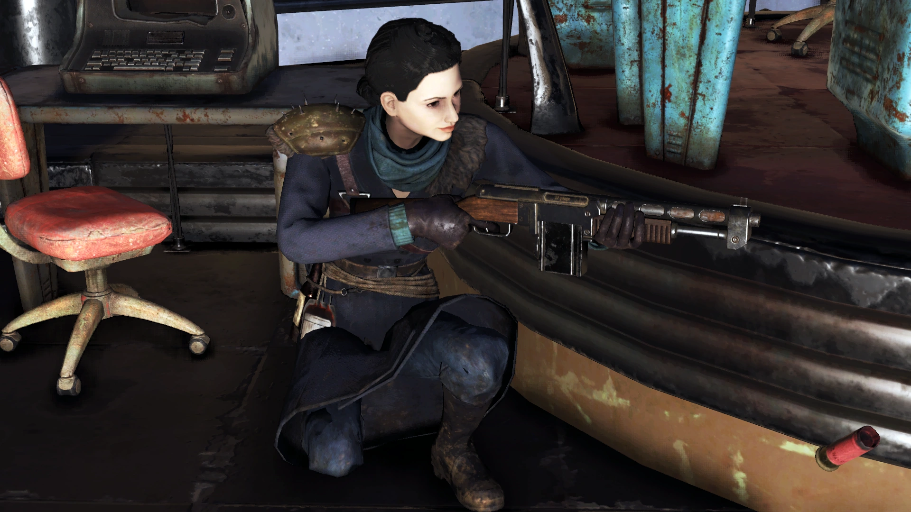
マルチプレイヤーゲームのため、恒久的なクエストコンパニオンはいません。代わりに15人以上の一時的なクエストコンパニオンが特定のクエスト中にプレイヤーを支援します。
C.A.M.P.（ハウジング）
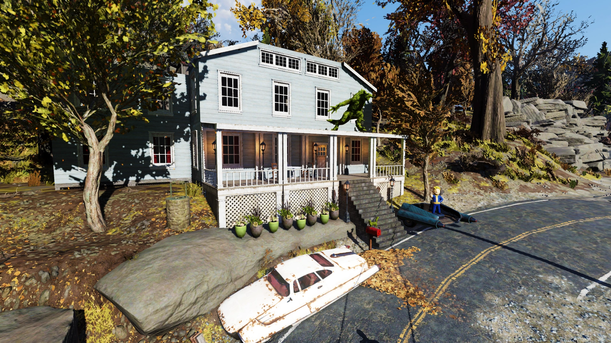
C.A.M.P.（Construction and Assembly Mobile Platform）は、プレイヤーが住居や前哨基地を建設できる主要機能です。プレイヤーはモダンな邸宅、お化け屋敷、迷路、脱出ゲーム、レストラン、ボウリング場、映画館など多様なスタイルのC.A.M.P.を作成しています。
ベンディングマシンを設置して他プレイヤーとのアイテム売買が可能です。シェルターは内部ロケーションで、より自由な建築が可能な2番目のC.A.M.P.スロットです。

19人のアリーが存在し、C.A.M.P.のルームメイトとして機能し、クリーチャーが出現した際にC.A.M.P.の防衛を手伝います。Sofia DaguerreとBeckettは独自のナラティブクエストラインを提供するユニークなアリーです。
ペット
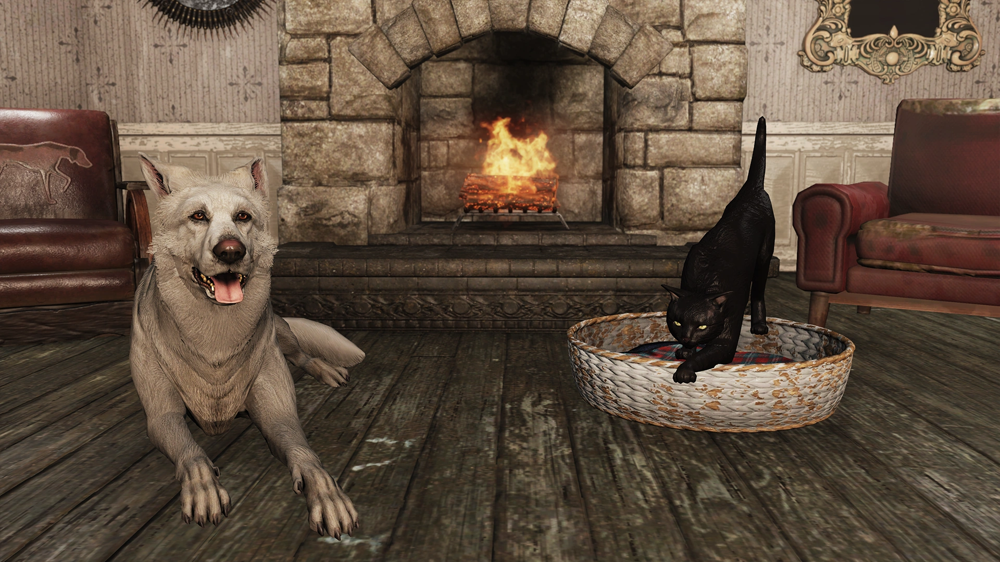
2024年にペットシステムが追加され、犬と猫をC.A.M.P.に置けるようになりました。技術的な制限により、『Fallout 4』のドッグミートのようにワールドを一緒に歩き回ることはできませんが、C.A.M.P.内でプレイヤーについてきます。
パークカードシステム
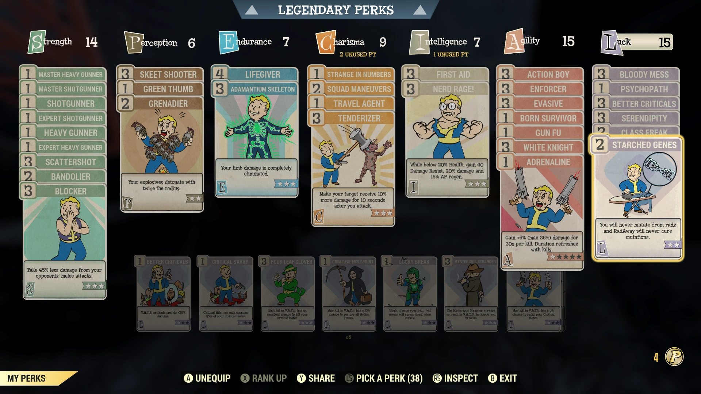
能力は200枚以上のカードが利用可能なユニークなカードデッキシステムに結びついています。プレイヤーはSPECIAL属性にカードを配置してビルドを構築します。レベル50以降はSPECIALポイントを獲得しなくなりますが、パークカードの選択は継続できます。
レジェンダリーパークはレベル50以降にアンロックされ、パークコインを使用して効果をランクアップできます。パンチカードマシンでSPECIALロードアウトの再配分も可能です。
シーズンとS.C.O.R.E.
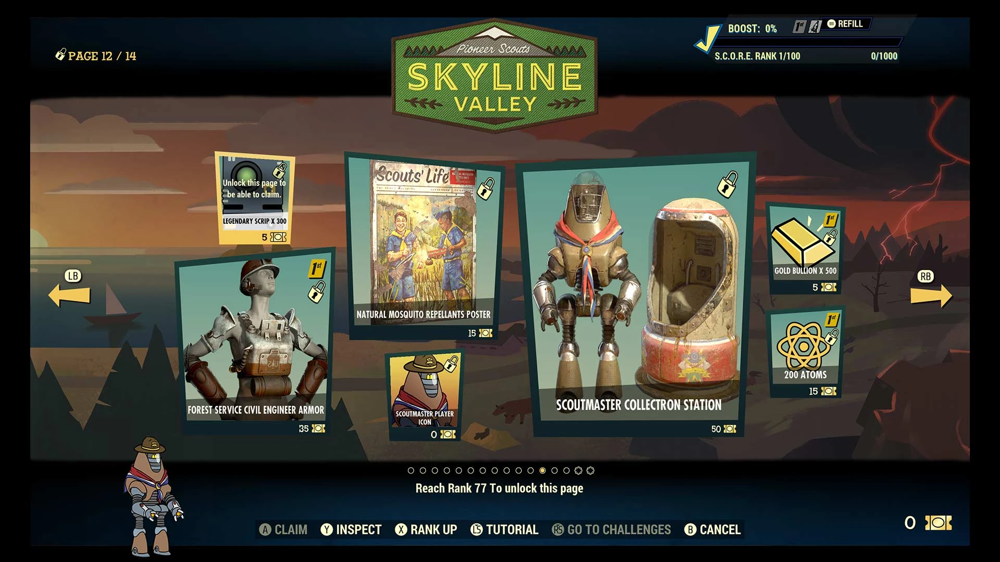
シーズンは約3ヶ月間続き、デイリーおよびウィークリーチャレンジを達成してS.C.O.R.E.を獲得し、ランクアップして報酬を進めていきます。報酬は通常そのシーズン中のみ利用可能です。
ストーリー
オリジナルクエストライン（2018年）
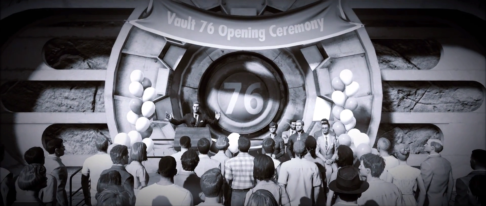
Vault 76はVault-Tec Corporation製の17のコントロールVaultの1つで、実験なしに設計されました。「アメリカ最高の頭脳たち」であるVault居住者たちは、2077年10月23日の大戦での核爆撃を生き延びました。25年後のレクラメーション・デーに、監督官の指示に従いアパラチアの復興を目指してVaultから出ます。
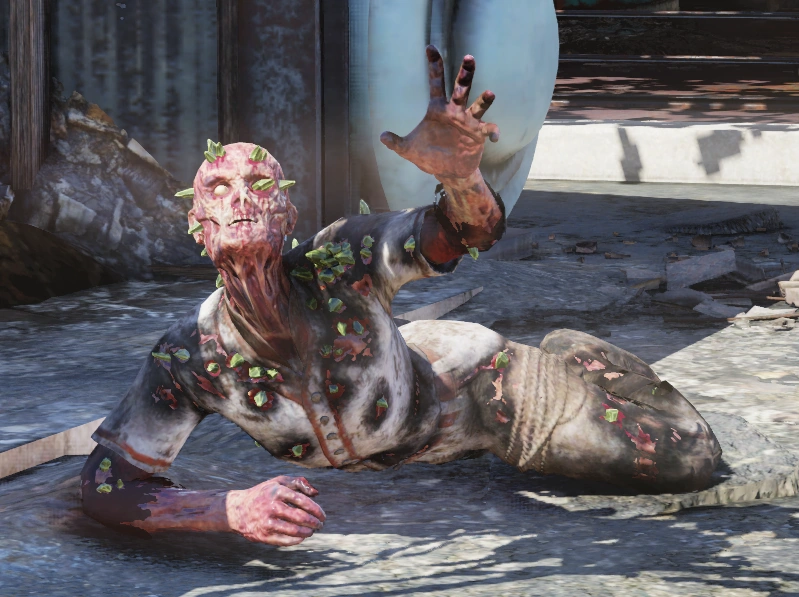
Vault居住者たちは、変異動物、生体実験、暴走ロボットが蔓延る廃墟の世界を発見します。スコーチ病（生存者をスコーチに変えるウイルス）と、ウイルスを拡散する巨大な変異コウモリであるスコーチビーストの存在を知ります。
プレイヤーは最初に解散したレスポンダーと出会い、自らワクチン接種を受けます。Top of the WorldでロボットのRoseと出会い、レイダーリーダーDavid ThorpeとRosalynn Jeffriesの悲劇的な物語を知ります。Free StatesのAbbie Singhのバンカーでスコーチ検知システムを完成させ、最終的にアパラチアン・ブラザーフッド・オブ・スティールの秘密やEnclaveのAI「MODUS」の存在を発見し、核兵器を使用してスコーチビーストと戦います。
Wastelanders
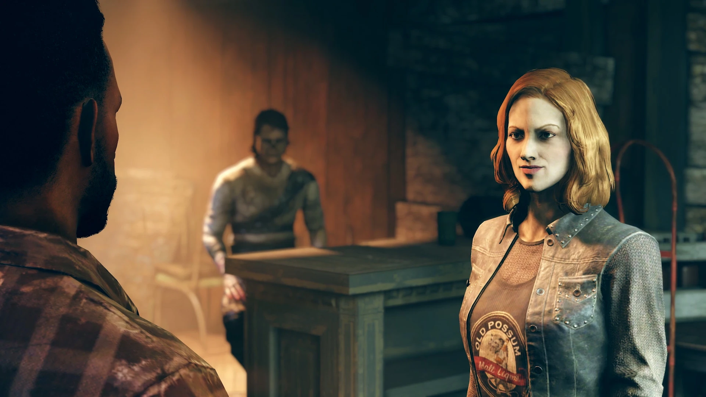
『Wastelanders』は、初めて生きた人間NPCを導入した大型コンテンツアップデートです。2103年10月23日を舞台に、財宝の噂を聞いた人間やグールの生存者がアパラチアに帰還します。プレイヤーはThe Waywardバーで経営者のDuchessを助け、Crater Raidersのリーダー・Meg GrobergやFoundation SettlersのリーダーPaigeと出会います。最終的にVault 79への襲撃で、どちらの派閥と協力するかを選択します。
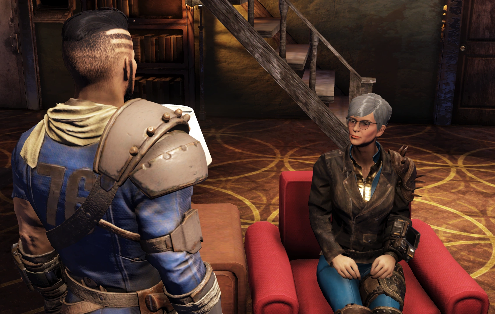
Steel DawnとSteel Reign
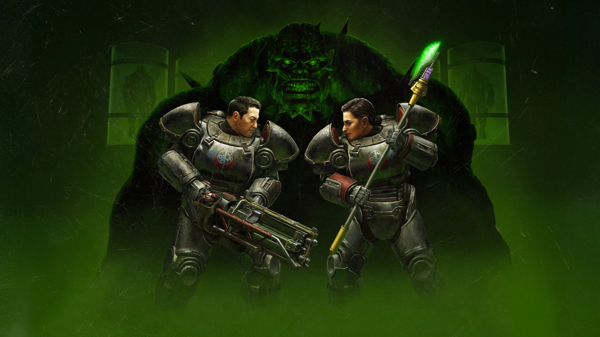
カリフォルニアから到着したBrotherhood First Expeditionary Forceを中心とした物語です。理想が対立する2人のメンバー、Knight Daniel ShinとPaladin Leila Rahmaniの対立を描きます。このクエストラインはFort Atlasを訪問し、レベル20以上で開始できます。最終的にプレイヤーの選択により、どちらがBrotherhoodのリーダーとなるかが決まります。
Expeditions: The Pitt
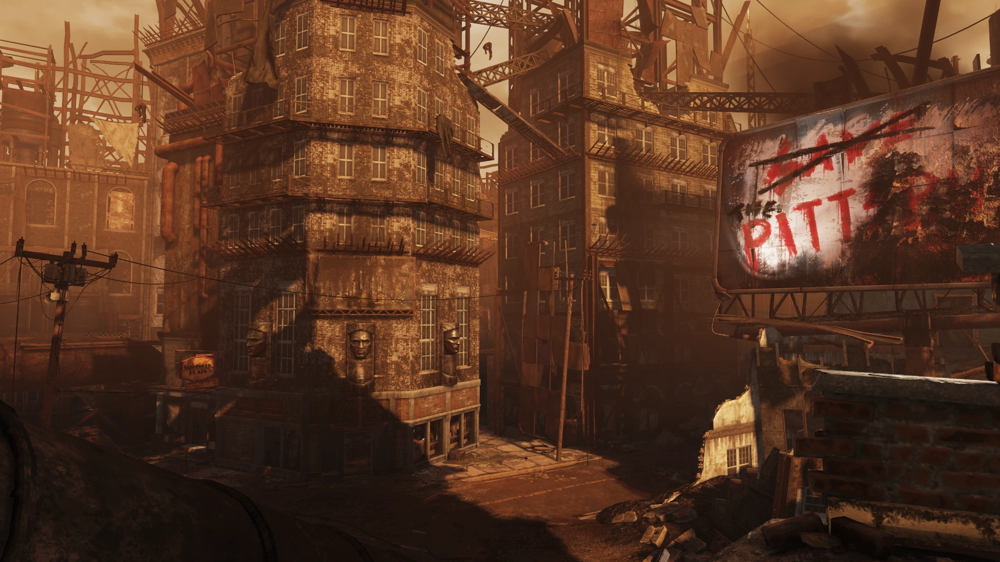
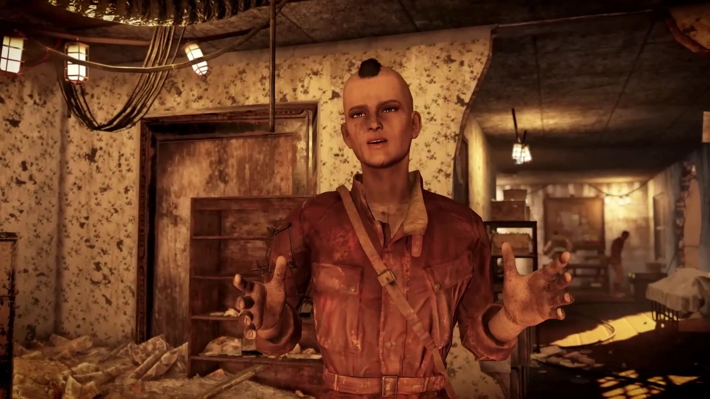
2104年、レスポンダーがRuckerの尽力により復活。ピッツバーグのVault居住者たちは、Fanaticsと呼ばれる暴力的なレイダー集団と戦うPittsburgh Unionを支援するためにVertibird（バーティバード）でThe Pittへ向かいます。
Expeditions: Atlantic City
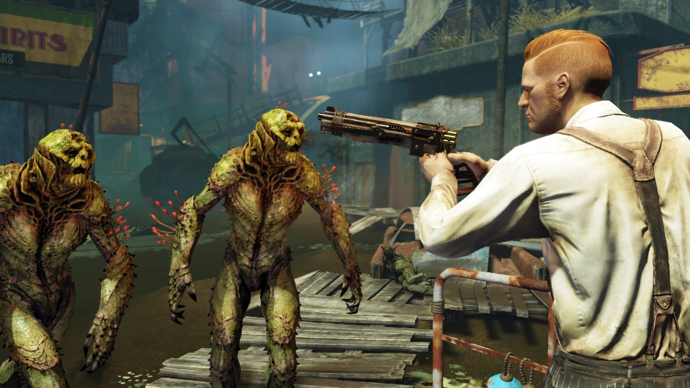
2105年、プレイヤーはアトランティックシティへ旅し、Showmenと呼ばれるグループやRusso一家の物語に関わります。アトランティックシティにはフリーローミングエリアがあり、ネアポリタンカジノでギャンブルのミニゲームも楽しめます。
Skyline Valley
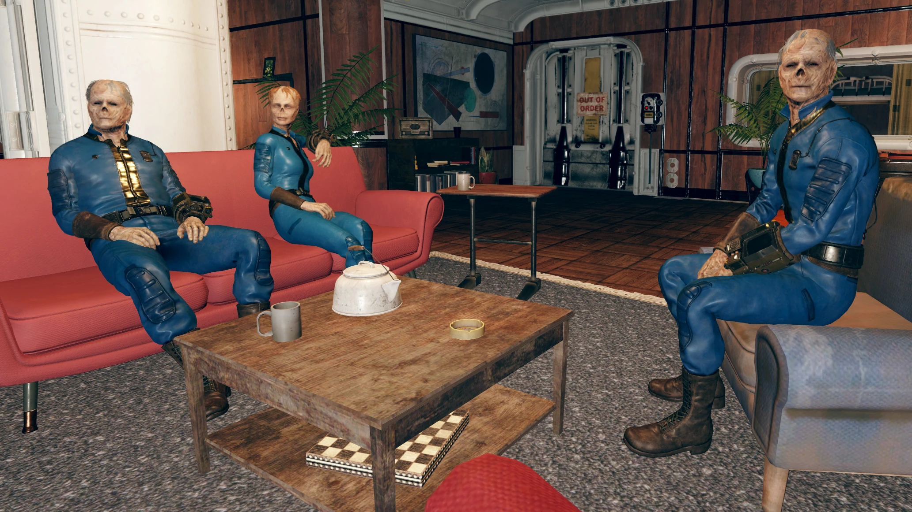
2105年を舞台に、Vault 63のドアが吹き飛ばされているのを発見し、「Lost」と呼ばれる新たな敵対的グールと出会います。最終的にVault 63の監督官Hugo Stolzの秘密と野望を暴き、Lostを偶然生み出した実験装置について学びます。
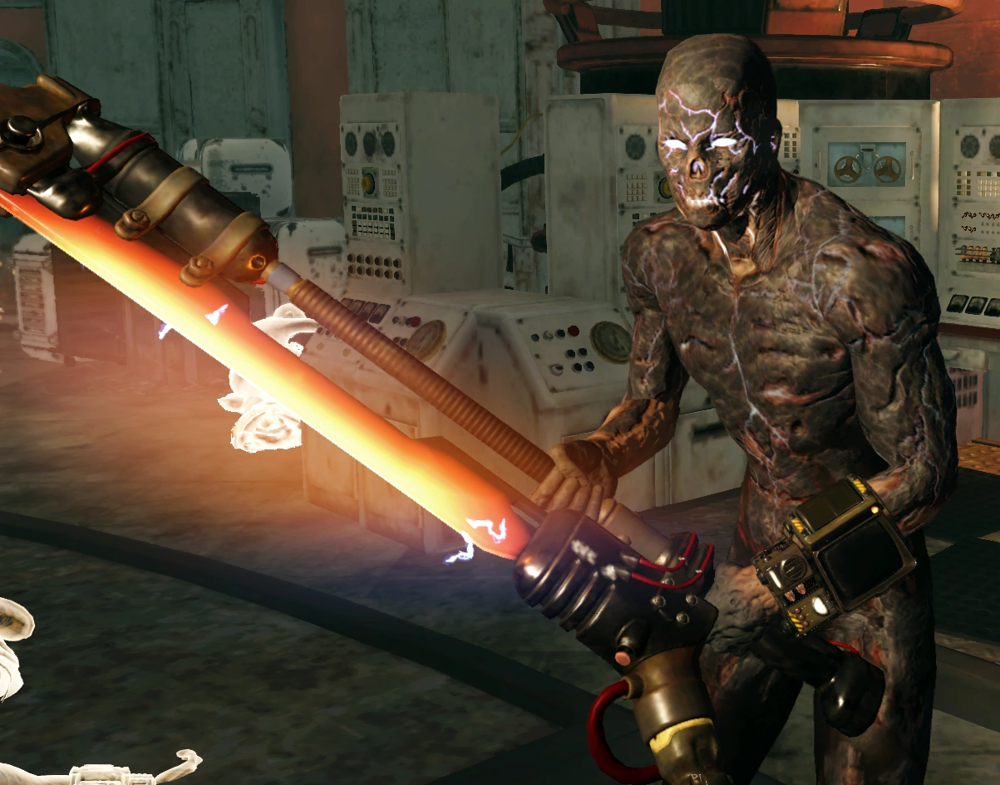
Burning Springs
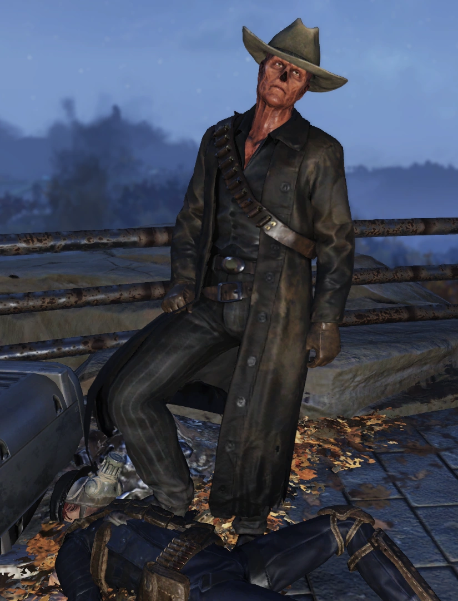
Vault 76の居住者たちは南東オハイオ州のBurning Springs地域へ旅立ち、TVシリーズでお馴染みのThe Ghoulと出会います。地域の軍閥であるRust Kingとそのレイダー軍団との戦いにも巻き込まれます。
開発
『Fallout 76』のアイデアは、『Fallout 4』エンジンにマルチプレイヤーを実装したいという願望から生まれました。Todd Howardは当初マルチプレイヤーFalloutを作ることに消極的でしたが、ファンベースの一部がマルチプレイヤーゲームを求めていたことから考えを変えました。
開発は『Fallout 4』のリリース直前に、テキサスのBethesda Game Studios Austinで開始されました。オースティンスタジオは当時BattleCry Studiosとして知られており、QuakeのネットコードをFallout 4エンジンに実装し始めました。2015年11月14日（Fallout 4リリースの4日後）に「本格的な開発」に入りました。
ワールドデベロッパーのNathan Purkeypileは、Skyrimより大きなワールドマップの実現のためにBethesdaと「かなり争った」と述べています。彼は「ゲームの評判は悪いが、マップはかなり良い」という声を聞いた時、自分の仕事をやり遂げたと感じたと語っています。
人間NPCを含めるかどうかは開発チーム内で大きな議論となりました。最終的に他プレイヤーがNPCの役割を果たすという実験的アプローチが採用されましたが、『Wastelanders』アップデートで生きた人間NPCが追加されました。
評価
ローンチ時の評価
『Fallout 76』はローンチ時に否定的な評価を受け、2018年のゲーム業界で最悪のローンチの一つとされました。Metacriticでは PC 52/100、Xbox One 49/100、PS4 53/100のスコアを記録しました。
主な問題点は退屈なゲームプレイ、多数のバグ、生きたNPCの欠如、道徳的意思決定の不足でした。ゲーム外でもキャンバスバッグがナイロンに変更された問題やパワーアーマーヘルメットのカビ問題などが批判されました。
ローンチ後の評価
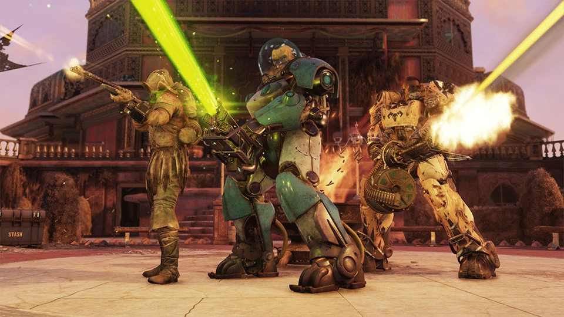
リリース以降70回以上のパッチが適用され、プレイヤー体験は大幅に改善されました。Steamでは約85%のレビューが「好評」で、7.2/10の総合スコアとなっています。
PCWorld.comは2020年のWastelandersアップデートについて「Wastelandersは、Fallout 76が本来ローンチ時にあるべきだった姿にはるかに近い。セカンドチャンスに値するゲームだ」と評価しました。
IGNは2024年に再レビューを行い、スコアを5/10から7/10に引き上げ、現在ははるかに楽しめるゲームになっていると評価しました。
プレイヤーベースと人気
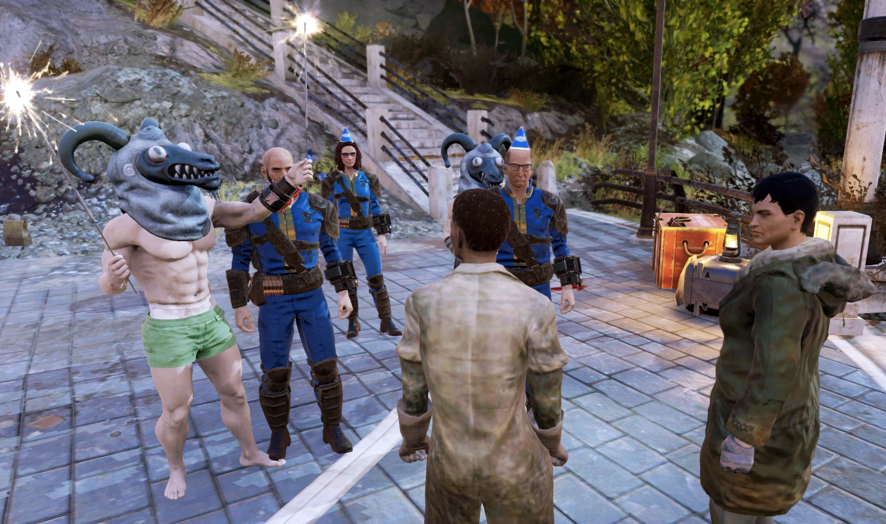
2024年4月、Fallout TVシリーズの放映とAmazon Primeでのゲーム無料配布により、Steam同時接続プレイヤー数73,368人の過去最高記録を樹立しました。Bethesdaはこの期間中に100万人以上が1日でログインしたと発表しました。現在のSteam平均同時接続数は15,000〜25,000人です。
また、日本でも非常に人気があり、Bethesdaは日本語吹き替えと日本語トレーラーを制作してプロモーションを行っています。
裏話
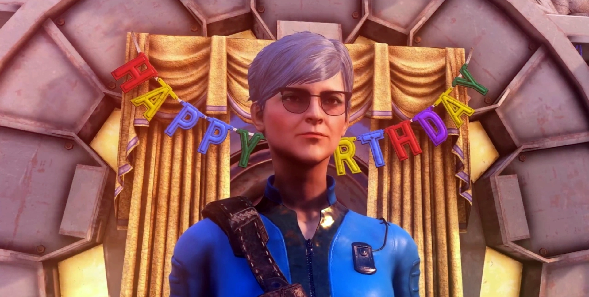
- Fallout 76はシリーズで最も多くのNPCを持つゲームとなっており、Skyline Valleyアップデート時点で500人以上のNPCが存在します。
- Phil Spencer（Microsoft Gaming CEO）もXboxでプレイしており、ユーザー名はP3です。
- ホラー映画『遊星からの物体X』で知られるJohn CarpenterもFallout 76をプレイしており、素晴らしいゲームだと評しています。
- ボビーピンの重量が当初0.1ポンドに設定されていましたが、ファンがTodd Howardにボビーピンを送り重さを計るよう依頼。すぐに0.001ポンドに変更されました。
- 「PIPE IS LIFE」はWastelandersで追加されたランダムイベントから生まれたコミュニティミームとなりました。
- 大戦が10月下旬に発生したため、ゲームにはハロウィン要素が含まれており、Pumpkin HouseやMonster Mashなどがあります。
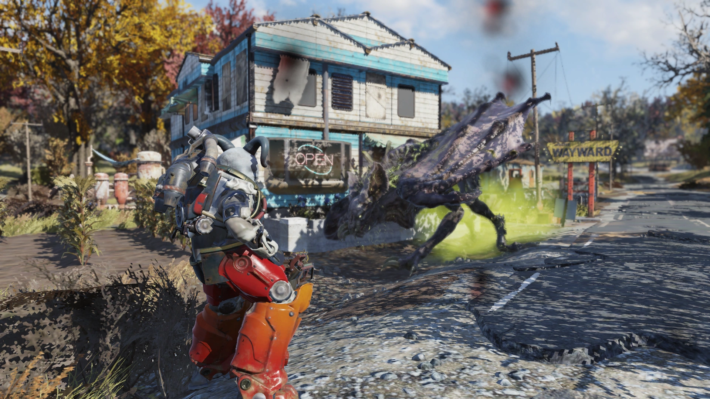
ギャラリー
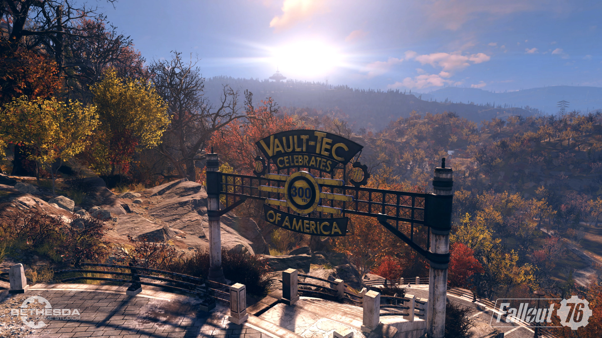
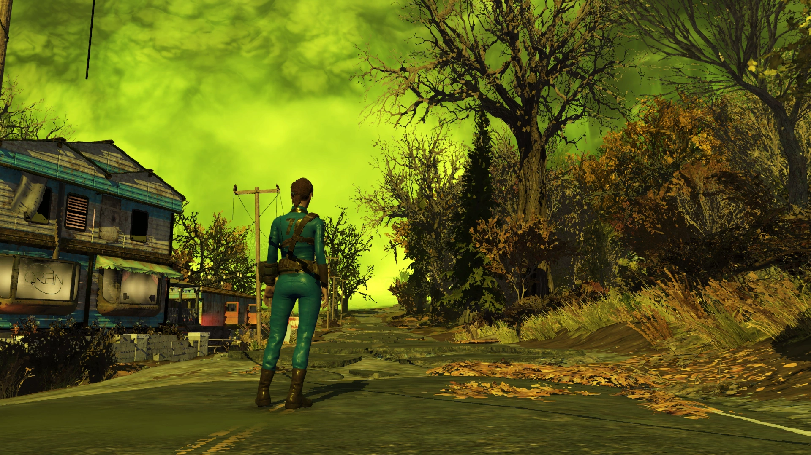
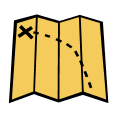
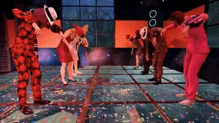
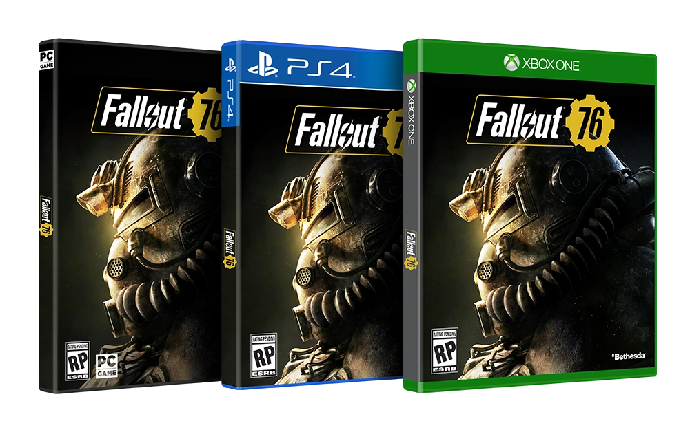
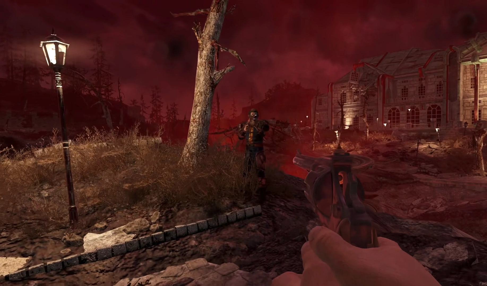
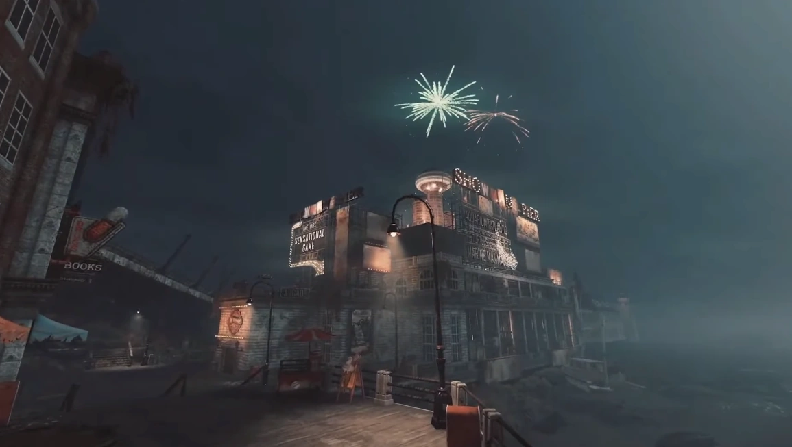
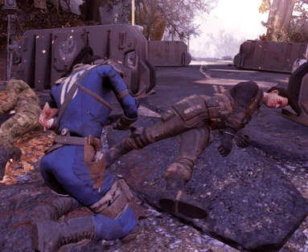
Fallout 76はローンチ時に多くの問題を抱えていましたが、6年以上にわたる継続的なアップデートにより、今では充実したオンラインFallout体験を提供するゲームへと進化しました。
ソロでもマルチでも楽しめるクエスト、C.A.M.P.ビルダー、グールプレイ、そしてフレンドリーなプレイヤーコミュニティが魅力です。
日本でも根強い人気を誇っており、Falloutシリーズへの入門としても最適な一作です。
This article was created by translating and editing Fallout 76 from Nukapedia: The Fallout Wiki.
Licensed under the Creative Commons Attribution-Share Alike License (CC BY-SA 3.0).
コミュニティ維持のため、寄付を受け付けております。
> COMMENTS